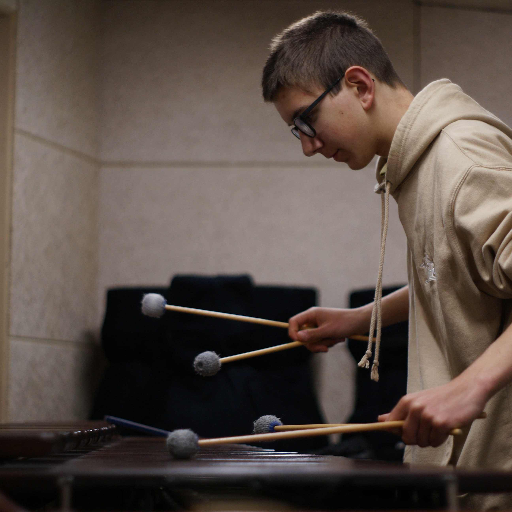
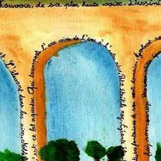
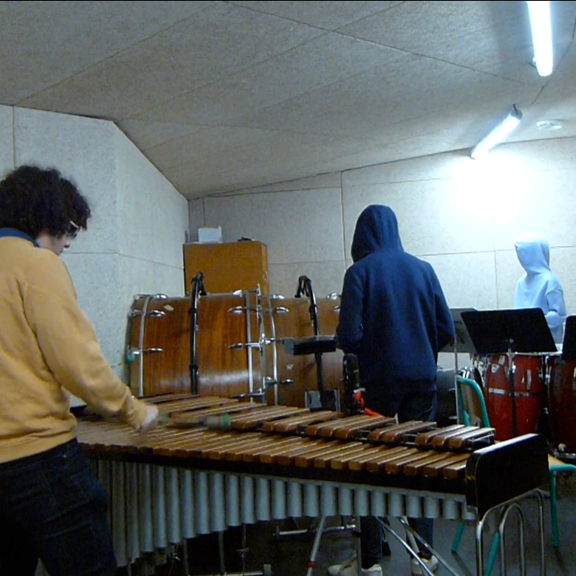

Musiques
Mes oeuvres musicales
La musique rythme ma vie. Je suis percussionniste, retrouvez ici mes compositions, enregistrements et projets sonores.
Souvenir du cirque Rentz - Clavier 2 baguettes
Morceau de xylophone, enregistrement de mon passage pour l'examen de fin de 2eme cycle.

General'afrit - Thibault Brebbia
Morceau de marimba à 4 baguettes, enregistrement de mon passage pour l'examen de fin de 2eme cycle. Un morceau clin d'oeil à ma première tentative l'année précédente avec Generalife d'Emmanuel Séjourné
Etude - Drouet
Morceau de timbales, enregistrement de mon passage pour l'examen de fin de 2eme cycle.
A minute of news - Eugène Novotney
Morceau de caisse claire, enregistrement de mon passage pour l'examen de fin de 2eme cycle.
Ottomano - Concerto n°2 per Set up
Morceau de multipercussion, enregistrement de mon passage pour l'examen de fin de 2eme cycle.
L'aqueduc de Buc
J'ai gagné un concours de poésie dans ma classe, et en récompense mon poème a été mis en musique en cours de musique avec Mme Durand-Gasselin. Cette version est l'interprétation faite par Sixtine, ma soeur, à la guitare et moi-même


Golden Hour de JVKE, au Marimba (Mars 2024)
Je me suis simplement enregistré, avec deux autres amis (Sacha et Gonzague) sur un marimba au conservatoire de Versailles Grand Parc, sur une reprise d’un morceau de JVKE.
Irrégulier
Une improvisation à trois, sur multipercussions, par moi(Hugues), Sacha et Gonzague.

Mes projets avec Sacha
J'ai participé à plusieurs projets musicaux, notamment en filmant, parfois en jouant et en enregistrant un ami : Sacha Duflot Verez (percussionniste, pianiste, bassiste, compositeur, arrangeur, chanteur, génie...)
Et vous, ça sonne ? #4
Dans cette série, Sacha et moi remixons des sonneries connues, accompagné d'un clip pour chaque création. Voici le quatrième épisode, avec Over the Horizon de Samsung !
Et vous, ça sonne ? #3.5
Dans cette série, Sacha et moi remixons des sonneries connues, accompagné d'un clip pour chaque création. Voici le remix de "Soie", une sonnerie pour android
Feels good
Salut ! Voici notre musique "Feels good" (musique composé par Sacha) filmé puis monté par moi-même ! Musiciens : Gonzague De Carmantrand à la batterie, Amaury Aubry-Rauter à la trompette, Nadilam Convert au violon et Sacha Duflot Verez au piano et chant.
Et vous, ça sonne ? #3
Dans cette série, Sacha et moi remixons des sonneries connues, accompagné d'un clip pour chaque création. Voici un remix du son de démarrage de windows 11.
Et vous, ça sonne ? #2
Dans cette série, Sacha et moi remixons des sonneries connues, accompagné d'un clip pour chaque création. Reconnaitrez-vous la sonnerie original ?
Et vous, ça sonne ? #1
Dans cette série, Sacha et moi remixons des sonneries connues, accompagné d'un clip pour chaque création. Voici le premier épisode : à vous de la reconnaitre